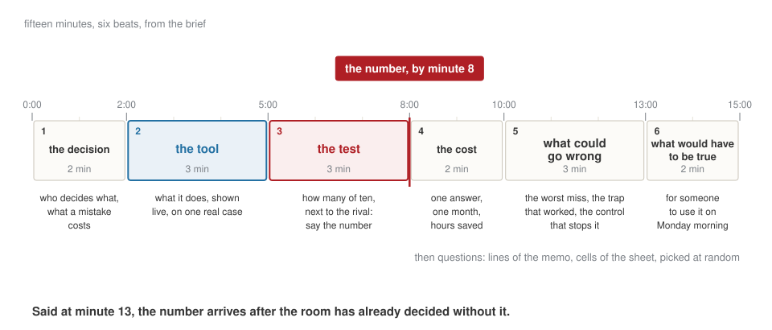

Week 10 · Wednesday 2 December 2026 · 10:00–13:00
AI for Business and FinTech · European School of Economics, Florence
| 1–5 | 23 Sep – 4 Nov | a model’s release · tokens · look first · read first · agents and harnesses ✓ |
| Mid + 6 | Wed 18 Nov | the oral · the crypto world, simply · stablecoins · the capstone ✓ |
| 7 | Thu 19 Nov · 15:00 | how a stablecoin works · the AI that reads ✓ |
| 8 | Wed 25 Nov | USDT on the chain · the AI that looks ✓ |
| 9 | Thu 26 Nov · 15:00 | an agent that pays in USDT · the AI that acts ✓ |
| 10 | Wed 2 Dec | capstone studio |
| Rev. | Wed 9 Dec | final presentation |
Four days to the deadline. Today nothing new comes in: everything you have goes out.
An agent with a key can pay in USDT, at any hour, and a signed transfer has no undo. Tether is building the wallets for it.
The bot that swore it was human broke Article 50 of the AI Act. Freysa paid out because its only rule was a sentence.
A rule in the prompt is a request. A limit outside the model is a law: a cap, an allowlist, a person above a threshold, two signatures, a delay.
Your treasury agent met five cases, and your capstone got its table: risk, control, law or request, who signs.
| 10:00 | your draft, reviewed: six checks |
| 10:20 | the storyline: six beats, fifteen minutes · five ways to lose marks |
| 10:40 | studio: the tool, frozen · the test, run |
| 11:30 | break |
| 11:45 | studio: the bill · the two sections with numbers |
| 12:20 | rehearsal: fifteen minutes, a clock, questions |
| 12:50 | the course in one picture · three lines |
Your laptop on the projector all morning. I ask; you show.
A model built most of your tool in an afternoon. Nobody else could have written your ten questions, picked your rival or read your token counter. That is what gets marked.
| the check | where it lives | |
|---|---|---|
| 1 | the tool opens on someone else’s laptop | the link in capstone/ |
| 2 | ten questions or cases, answers found by hand with their source, dated before the tool | the test sheet |
| 3 | a rival that does no work, on the same ten; every miss named: retrieval · generation · memory · rule broken | the test sheet |
| 4 | the cost: tokens in, tokens out, both prices, one month | the cost tab |
| 5 | every risk with a control, marked law or request, with who signs | the memo |
| 6 | the disclosure: three things an assistant got wrong | the memo |
We open the draft and go through the six, one by one.
Most talks build up to it: context, method, data, and the result in the last three minutes. A trading desk works the other way round: the number first, then why it can be trusted.
Beat 3 ends at minute 8. After that, every minute you speak is either defending the number or wasting the room’s attention.

| beat | the first sentence, for example |
|---|---|
| 1 · the decision | “Every quarter a compliance analyst checks what a stablecoin issuer claims against its reserve report. A miss costs a fine.” |
| 2 · the tool | “This notebook checks each claim against the report, and gives the page for each answer.” |
| 3 · the test | “Eight of ten, with the right page. A keyword search got four.” |
| 4 · the cost | “Less than a cent a check, a few euros a month, a day of reading saved each week.” |
| 5 · what could go wrong | “It missed the bitcoin line twice, both times inside a table. It never invented a page.” |
| 6 · what would have to be true | “An analyst still signs. It drafts; it does not decide.” |
Write your six sentences first. If one will not come, the beat is missing from the work, not only from the talk.
| the mistake | what the reader sees | the fix |
|---|---|---|
| no rival | “8 of 10”, with nothing next to it | one rival that does no work: last time’s answer, the base rate, a keyword search |
| the test written after the tool | questions the tool happens to answer | the tab dated before the tool; the misses kept |
| a cost without tokens | “about twenty euros a month” | tokens in, tokens out, both prices, the volume |
| a risk without a control, or a control that is a request | “the model is instructed not to…” | a law: a cap, an allowlist, a person who signs |
| a vague disclosure | “I used ChatGPT for help” | which tool, for what, three things it got wrong |
The brief says it once: a point counts when the sheet, a number or the tool shows it, not when a paragraph asserts it.
LAB · 20 minutes · output: a link that opens anywhere, and a model card
A score belongs to a version. A tool you cannot freeze, you cannot test.
LAB · 30 minutes · output: the test tab, complete
LAB · 15 minutes · output: the cost tab
From the token counter: tokens in and tokens out for one real question. Then one month at the volume your user needs, and the hours saved against a person doing it by hand.
An example: 6,000 tokens in and 800 out, at $0.50 and $3.00 per million, is half a cent an answer. Forty a day for 22 working days is under five dollars a month. If each answer saves ten minutes, the month saves about 147 hours.
Illustrative prices: use the ones on your model’s page. The model’s bill is rarely the point. The hours are the value, and the miss is the cost.
LAB · 20 minutes · output: two memo sections, drafted
While the sheet is still open, write the two sections a reader will check against a cell:
Every number in the memo points to a cell. A number that points nowhere is an opinion.
LIVE · your laptop on the projector · a clock on mine
| I will say… | what I am checking |
|---|---|
| “Read me this sentence. Where does the number come from?” | every number points to a cell |
| “Open this cell. Who wrote the answer, and when?” | the test came first, by hand |
| “Show me a miss. Which kind?” | retrieval, generation, memory, rule broken |
| “This control: law or request? Who signs?” | the rules hold without the model’s goodwill |
| “Which part did the assistant write?” | the disclosure is true |
| “What would make you switch it off?” | you know where it breaks |
Lines of the memo and cells of the sheet, picked at random.
The rule from the first morning, unchanged. It holds for a sentence, a cell, a slide and a rules file alike.
None of it needs a line of code. All of it needs you in the loop.
Sunday 6 December, 23:59: the memo on Turnitin, with your matriculation number; the tool, the test sheet and the cost in ese-ai-fintech/capstone/, shared with me.
Wednesday 9 December, 10:00 (proposed): fifteen minutes, then questions.
Three lines, the last three of the course: one on what you will test before you trust a model, one on what you would never let an agent do alone, one on the thing that stays yours.
Visibilia ex invisibilibus. See you on the 9th.
AI for Business & FinTech · ESE Florence